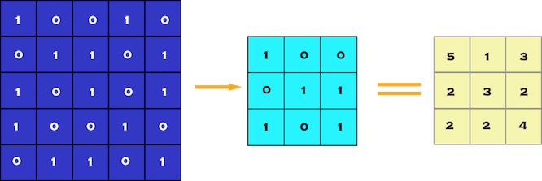
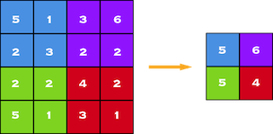
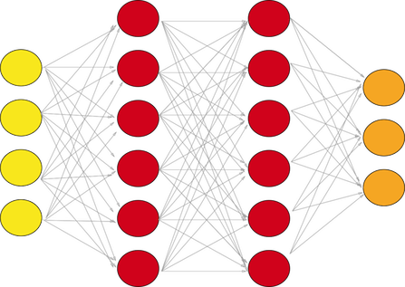
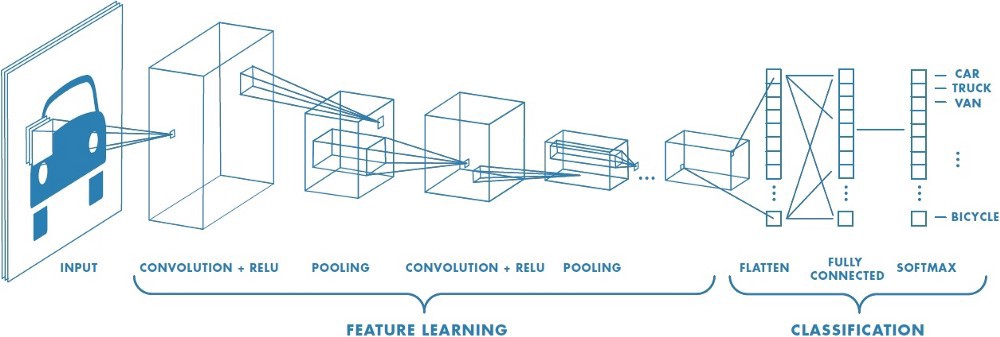

Purdue机器学习入门（一）手写数字分类
文章目录


MNIST数据集和数字分类
开始使用神经网络学习深度学习时，会发现最强大的监督深度学习技术之一是卷积神经网络（“CNN”）。CNN的最终结构实际上与常规神经网络（RegularNets）非常相似，其中存在具有权重和偏差的神经元。此外，就像在RegularNets中一样，我们在CNN中使用损失函数（例如crossentropy或softmax）和优化器（例如adam optimizer）。在CNN中，还有卷积层，池化层和展平层。CNN主要用于图像分类，也可以用在其他应用领域，如自然语言处理。
为什么采用卷积神经网络
RegularNets的主要结构特征是所有神经元都相互连接。例如，当我们有28 x 28像素且只有灰度的图像时，我们最终会在一层管理784（28 x 28 x 1）个神经元。但是，大多数图像具有更多像素，并且不是灰度的。因此，假设我们在4K Ultra HD中有一组彩色图像，我们将在第一层中有26,542,080（4096 x 2160 x 3）个不同的神经元彼此连接，这样数据太大了。因此，我们可以说RegularNets不可扩展用于图像分类。然而，特别是当涉及图像时，两个单独的像素之间似乎几乎没有相关性，这导致了Convolutional Layers和Pooling Layers的出现。
CNN中的图层
我们能够在卷积神经网络中使用许多不同的层。但是，卷积，池化和完全连接层是最重要的。
卷积层
卷积层是我们从数据集中的图像中提取特征的第一层。由于像素仅与相邻像素和近像素相关，因此卷积允许我们保持图像的不同部分之间的关系。卷积基本上是用较小的像素滤波器对图像进行滤波，以减小图像的大小而不会丢失像素之间的关系。当我们通过使用具有1x1步的3x3滤波器（每步1个像素）将卷积应用于5x5图像时。我们最终会有3x3的输出（复杂性降低64％）。
 图1：5 x 5像素图像与3 x 3像素滤镜的对比（步幅= 1 x 1像素）
池化层
在构造CNN时，通常在每个卷积层之后插入池化层以减小表示的空间大小以减少参数计数，这降低了计算复杂度。此外，池化层也有助于解决过度拟合问题。基本上，我们通过选择这些像素内的最大值，平均值或总和值来选择池大小以减少参数量。Max Pooling是最常见的池化技术之一，可以演示如下：
 最大池数为2 x 2
一组完全连接的图层
完全连接的网络是我们的RegularNet，其中每个参数彼此链接以确定标签上每个参数的真实关系和影响。由于卷积和池化层使我们的时空复杂性大大降低，我们最终可以构建一个完全连接的网络来对图像进行分类。一组完全连接的层看起来像这样：
 具有两个隐藏层的完全连接层
 卷积神经网络实例 了解了可以构建用于图像分类的卷积神经网络，我们可以进行图像分类练习：MNIST数据集
1 2 3 4 5 6 7 8 9 10 11 12 13 14 15 16 17 18 19 20 21 22 23 24 25 26 27 28 29 30 31 32 33 34 35 36 37 38 39 40 41 42 43 44 45 46 47 48 49 50 51 52 53 54 55 56 57 58 59 60 61 62 63 64 65 66 67 68 69 70 71 72 73 74 75 76 77 78 79 80 81 82 83 84 85 86 87 88 89 90 91 92 93 94 95 96 97 98 99 100 101 102 103 104 105 106 107 108 109 110 111 112 113 114 115 116 117 118 119 120 121 122 123 124 125 126 127 128 129 130 131 132 133 134 135 136 137 138 139 140 |
import os #python库
import torch #torch库 pytorch是python深度学习框架，和tensorflow，Caffe，MXnet一样，底层的框架
import torch.nn as nn
import torch.utils.data as Data
import torchvision
import matplotlib.pyplot as plt #绘图库，用于结果显示
# 深度学习超参数，就是一些参数而已
EPOCH = 1 # 训练次数
BATCH_SIZE = 50 #每次训练一个太浪费，所以每次训练一批，一批的大小根据处理器性能等自己定
LR = 0.01 # 学习率，简单讲，越小训练效果越好，训练时间越长
DOWNLOAD_MNIST = False #是自己导入数据，还是从网上下载数据集
PATH = '..\data\mnist' #下载位置
# Mnist digits dataset
if not (os.path.exists(PATH)) or not os.listdir(PATH):
# not mnist dir or mnist is empyt dir
DOWNLOAD_MNIST = True
print('no download')
#导入MNIST数据集，专为新手设计，MNIST 数据集来自美国国家标准与技术研究所（话说米国官方公布很多有用的数据）,由来自 250 个不同人手写的数字构成, 50% 高中学生, 50% 人口普查局工作人员.
train_data = torchvision.datasets.MNIST(
root=PATH,
train=True, # this is training data 要导入训练集true， 测试集false
transform=torchvision.transforms.ToTensor(
), # Converts a PIL.Image or numpy.ndarray to 格式转换，从图像数据或者numpy数据转换为pytorch使用的数据
# torch.FloatTensor of shape (C x H x W) and normalize in the range [0.0, 1.0]
download=DOWNLOAD_MNIST,
)
# plot one example
print(train_data.train_data.size()) # (60000, 28, 28) 共计60000幅图像，像素大小28×28
print(train_data.train_labels.size()) # (60000)
plt.imshow(train_data.train_data[0].numpy(), cmap='gray') #显示第一个数字
plt.title('%i' % train_data.train_labels[0])
plt.show()
ls = train_data.train_data[0].numpy()
# Data Loader for easy mini-batch return in training, the image batch shape will be (50, 1, 28, 28)
#第二个重点，将数据集导入train_loader，不要问为什么，设计好的导入数据方法，此坑不要浪费时间
train_loader = Data.DataLoader(
dataset=train_data, batch_size=BATCH_SIZE,
shuffle=True) #没有GPU的千万不要选num_worker
# pick 2000 samples to speed up testing
test_data = torchvision.datasets.MNIST(root=PATH, train=False)
test_x = torch.unsqueeze(
test_data.test_data, dim=1
).type(
torch.FloatTensor
)[:2000] / 255. # shape from (2000, 28, 28) to (2000, 1, 28, 28), value in range(0,1)
test_y = test_data.test_labels[:2000]
class CNN(
nn.Module
): #神经网络层数设计，模式都是固定的，只需要根据情况增加层数（几层合适，还没有完善理论，都是摸索出来的，比如有16层的，有254层的等），并且更改参数，参数的含义是重点研究的，
def __init__(self):
super(CNN, self).__init__()
self.conv1 = nn.Sequential( # input shape (1, 28, 28)
nn.Conv2d(
in_channels=1, # input height 数字是单色灰度的写1，rgb的写3
out_channels=16, # n_filters 卷积核数量，我也不知道为什么16，15也可以
kernel_size=5, # filter size 卷积核大小，5×5 3×3 据说还有1×1
stride=1, # filter movement/step 卷积移动步数，1就是走一步，图像大可能需要多跨过几步
padding=2, # 跨多了就会影响边界，所以要padding
# if want same width and length of this image after Conv2d, padding=(kernel_size-1)/2 if stride=1
), # output shape (16, 28, 28)
nn.ReLU(), # activation 激活层，还有其他形式，这个比较常见
nn.MaxPool2d( #池化层，理解为降维，减少数据量，28×28的图像之后就变为14×14，两次后就变为7×7
kernel_size=2
), # choose max value in 2x2 area, output shape (16, 14, 14)
)
self.conv2 = nn.Sequential( # input shape (16, 14, 14)
nn.Conv2d(16, 32, 5, 1, 2), # output shape (32, 14, 14)
nn.ReLU(), # activation
nn.MaxPool2d(2), # output shape (32, 7, 7)
)
self.out = nn.Linear(32 * 7 * 7, #全连接层，这是最后一层，输入为32 * 7 * 7，输出为0,1,2...9共计十个
10) # fully connected layer, output 10 classes
def forward(self, x):
x = self.conv1(x)
x = self.conv2(x)
x = x.view(
x.size(0),
-1) # flatten the output of conv2 to (batch_size, 32 * 7 * 7)
output = self.out(x)
return output, x # return x for visualization
cnn = CNN()
print(cnn) # net architecture
optimizer = torch.optim.Adam( #优化方法，最基本的是梯度下降，Adam是稍微改善的方法
cnn.parameters(), lr=LR) # optimize all cnn parameters
loss_func = nn.CrossEntropyLoss() # the target label is not one-hotted 损失函数
plt.ion()
# training and testing 开始训练
for epoch in range(EPOCH):
for step, (b_x, b_y) in enumerate(
train_loader
): # gives batch data, normalize x when iterate train_loader
output = cnn(b_x)[0] # cnn output
loss = loss_func(output, b_y) # cross entropy loss
optimizer.zero_grad() # clear gradients for this training step
loss.backward() # backpropagation, compute gradients
optimizer.step() # apply gradients
if step % 50 == 0:
test_output, last_layer = cnn(test_x)
pred_y = torch.max(test_output, 1)[1].data.numpy()
accuracy = float(
(pred_y == test_y.data.numpy()).astype(int).sum()) / float(
test_y.size(0))
print('Epoch: ', epoch, '|Step: ', step,
'| train loss: %.4f' % loss.data.numpy(),
'| test accuracy: %.2f' % accuracy)
torch.save(cnn, 'net.pkl') # 保存整个网络，便于以后再次调用
torch.save(cnn.state_dict(), 'net_params.pkl') # 只保存网络中的参数 (速度快, 占内存少)
net2 = torch.load('net.pkl')
# print 10 predictions from test data
test_output, _ = net2(test_x[:30])
pred_y = torch.max(test_output, 1)[1].data.numpy()
print(pred_y, 'prediction number')
print(test_y[:30].numpy(), 'real number')
lls = "["
for ii in range(30):
if (pred_y[ii] != test_y[ii]):
lls += "1 "
# plt.imshow(test_x[ii].numpy(), cmap='gray')
# plt.title('%i' % test_y[ii])
# plt.show()
else:
lls += "0 "
print(lls + "]") |
文章作者 Jeff Liu
上次更新 2019-01-12